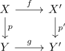

weak equivalence sandwhiched by kan fibrations
Proposition
Let $\mathrm{sSet}$ be the category sSet and

a diagram where
- $p,p'$ are kan fibrations
- $g$ is a weak equivalence
TFAE:
- $f$ is also a weak equivalence
- the induced map
\begin{align*}
p^{-1}[y \rightarrow (p')^{-1}(g(y))
\end{align*}
is a <homotopy equivalence>